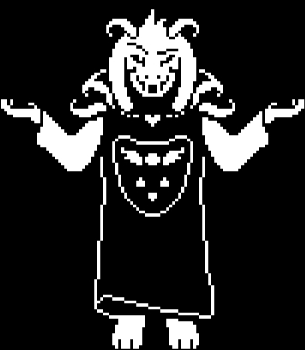
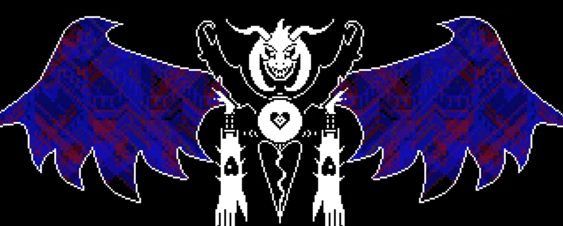

HOME/ |
FRISK/ |
BOSSES/ |
AÇÕES/ |
CRIADOR |

ASRIEL DREEMURR
Asriel Dreemurr é o príncipe do Subterrâneo e filho de Toriel e Asgore Dreemurr. Gentil e bondoso, ele cria uma forte amizade com a primeira criança humana caida. Após uma tragédia, ele morre e mais tarde renasce como Flowey, perdendo sua capacidade de sentir amor e compaixão. No fim da Rota Pacifista, Asriel recupera sua verdadeira forma, reconhece seus erros e liberta todos os monstros.
TEMA DA BATALHA
VOLTAR


História detalhada
Asriel Dreemurr é o filho de Toriel e Asgore, os governantes do Subterrâneo. Gentil, curioso e sempre disposto a ajudar, ele cresceu amado por todos os monstros e vivia feliz ao lado de sua família. Sua vida mudou quando a primeira criança humana caiu no Subterrâneo. Os dois se tornaram grandes amigos e passaram a agir como irmãos, compartilhando momentos felizes no Castelo Dreemurr.
Com o tempo, a criança humana adoeceu gravemente e pediu que seu corpo fosse levado até a superfície após sua morte. Para realizar esse último desejo, Asriel absorveu a alma da criança, ganhando poder suficiente para atravessar a barreira que prendia os monstros. Ao chegar à superfície carregando o corpo, os humanos acreditaram que ele havia matado a criança e o atacaram sem piedade.
Mesmo tendo poder para derrotar todos os humanos presentes, Asriel se recusou a lutar. Ele não queria machucar ninguém e apenas suportou os ataques enquanto voltava para o Subterrâneo. Gravemente ferido, conseguiu chegar ao jardim do castelo, onde morreu. Seu corpo se desfez em pó, espalhando suas cinzas pelo reino e deixando seus pais devastados.
Algum tempo depois, o cientista real Alphys realizou experimentos com Determinação. Uma flor que havia nascido no local onde o pó de Asriel foi espalhado recebeu essa Determinação e ganhou vida, tornando-se Flowey. Embora possuísse todas as memórias de Asriel, Flowey não tinha alma e, por isso, era incapaz de sentir amor, compaixão ou arrependimento. Isso o levou a manipular e machucar outras pessoas apenas por diversão.
Na Rota Pacifista Verdadeira, Flowey absorve as almas de todos os monstros e dos seis humanos, recuperando sua forma original como Asriel Dreemurr. Durante a batalha final, Frisk consegue alcançar os sentimentos que ainda existiam dentro dele. Asriel percebe o sofrimento que causou, pede perdão por seus erros e desfaz a barreira, permitindo que monstros e humanos finalmente possam viver em paz. Antes de desaparecer, ele se despede de Frisk e aceita seguir em frente, encerrando sua história com esperança.